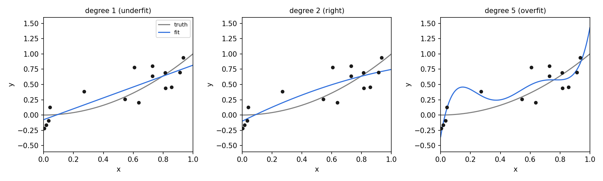
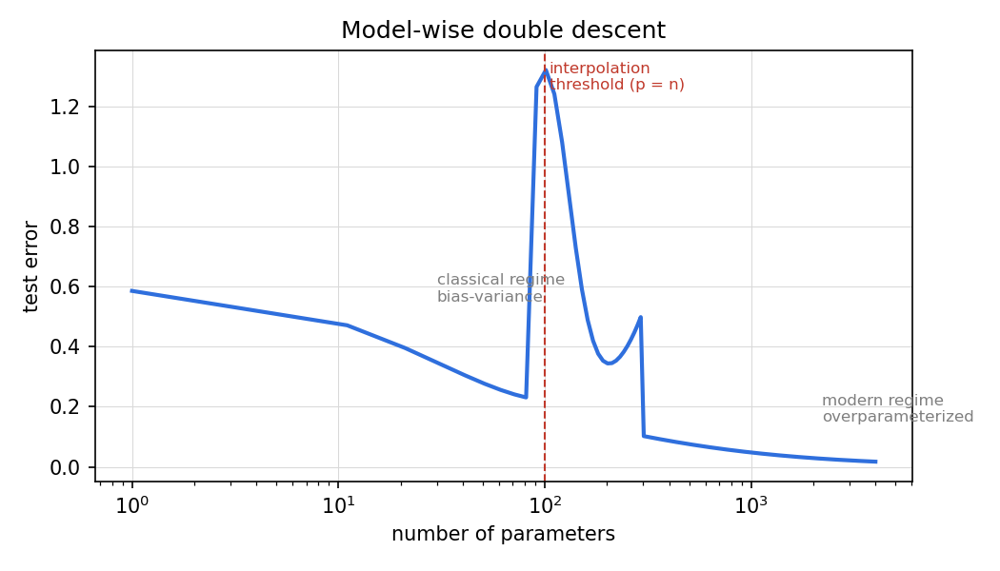

Lesson 08 · Generalization
Lesson 08, Generalization and sample complexity
Unit: cs229-U08. Leaf concepts: cs229-U08-C01 to C12 (bias/variance decomposition, irreducible noise, double descent, finite hypothesis class, concentration assumptions, union bound, infinite classes, VC dimension where notes establish, uniform convergence, approximation/estimation/optimization errors, IID limits, uncertainty). Date: 2026-10-06. Baseline: October 6, 2026.
Source mapping
Chapter 8 of the notes (SRC-01, PDF pages 116-136) was read in substantial part on 2026-10-06: section 8.1 (bias-variance tradeoff with the quadratic running example, Figures 8.1-8.9), section 8.1.1 (the MSE decomposition with Claim 8.1.1), section 8.2 (model-wise and sample-wise double descent, Figures 8.10-8.11), section 8.3.1 (union bound, Hoeffding), section 8.3.2 (finite H), section 8.3.3 (infinite H via the 64-bit argument). VC dimension: the notes do not develop it (C08 taught as “where notes establish”: the boundary of the notes’ own treatment). Leaf rows carry SOURCE ATTRIBUTION PENDING until the RUN 6 pass.
Scope and objectives
Scope: why training error is not test error, and the two classical toolkits for relating them: the bias-variance decomposition and uniform convergence bounds.
Objectives: the learner can (1) derive the bias-variance decomposition, (2) explain double descent, (3) apply Hoeffding plus union bound to finite classes, (4) state the sample complexity for finite H, (5) explain the infinite-H argument and its limits, (6) name where the notes stop (VC).
Dependencies
Prerequisites: P06, P07, P10 (shared bridges, linked).
Not-yet-understood list:
- Bias vs variance (remediated in SL-01).
- Double descent (remediated in SL-02).
- Uniform convergence (remediated in SL-03).
- The three error sources (remediated in SL-05).
SL-01: Bias, variance, irreducible noise
Covers C01 (bias/variance decomposition), C02 (irreducible noise).
Source anchor
SRC-01 sections 8.1-8.1.1, pages 117-123. Running example: truth is quadratic, noise N(0, sigma^2). Linear fit: large bias. Degree-5 fit: small bias, large variance. Decomposition: MSE = sigma^2 + bias^2 + variance.
Motivating question
The degree-5 polynomial hits every training point. Why is it worse than the quadratic on test data?
Mental model
Three error sources. Irreducible noise sigma^2: the data itself is noisy. No model predicts it. Bias^2: the model family cannot represent the truth even with infinite data (the linear fit to a quadratic). Variance: the fit changes with each dataset because it chases noise (the degree-5 wiggles differ per dataset, notes Figure 8.7).
Derivation
MSE(x) = E_{S, xi}[(y - h_S(x))^2], y = h(x) + xi. Claim 8.1.1: if E[A] = 0 and A independent of B, then E[(A+B)^2] = E[A^2] + E[B^2]. Apply with A = xi, B = h(x) - h_S(x): MSE = sigma^2 + E[(h(x) - h_S(x))^2]. Let h_avg(x) = E_S[h_S(x)]. Apply again with A = h_avg(x) - h_S(x), c = h(x) - h_avg(x): MSE = sigma^2 + (h*(x) - h_avg(x))^2 + E[(h_avg(x) - h_S(x))^2] (notes page 123). The three terms.
Computed example
Truth h*(x) = x^2 on [0,1], sigma = 0.3, n = 15. Linear family: bias^2 ~ 0.05 (cannot bend), variance ~ 0.002. Degree-5: bias^2 ~ 0, variance ~ 0.08 (wiggles). Quadratic: bias^2 ~ 0, variance ~ 0.008. Total test MSE: linear 0.09 + 0.05 + 0.002, degree-5 0.09 + 0 + 0.08, quadratic 0.09 + 0 + 0.008. The quadratic wins (notes Figure 8.9). Numbers are illustrative of the pattern. The ordering is the claim.
Correctness checks
- bias^2 + variance >= 0. MSE >= sigma^2 always.
- More data shrinks variance, never bias. Test: n = 15 vs n = 1500, the linear fit stays bad (notes Figure 8.3).
Nearest alternative
The bound-based view (SL-03): same question, answered with uniform convergence instead of averaging over datasets.
Failure case
“More data fixes underfitting”: the linear model on infinite data still misses the quadratic. Bias is a family property, not a data property.
Russian-doll ladder for bias-variance
- Shell 0: Question: which polynomial degree tests best? Observable: test MSE vs degree.
- Shell 1: Toy: quadratic truth, degrees 1/2/5.
- Shell 2: Objects: h*, h_S, h_avg, sigma^2.
- Shell 3: Rule: error = noise + bias^2 + variance.
- Shell 4: Derive: Claim 8.1.1 twice.
- Shell 5: Invariant: infinite data kills variance, not bias. Verify with n = 1e5.
- Shell 6: Change one factor: raise sigma from 0.1 to 0.5. Predict variance-driven degrees suffer more. Measure.
- Shell 7: Counterexample: noiseless data (sigma = 0): the degree-5 still overfits via Runge-like wiggles between points. Noise is sufficient, not necessary, for variance.
- Shell 8: Compare: bias-variance lens vs uniform bound lens on the same polynomial task.
- Shell 9: Extension: plot the three terms vs degree on synthetic data. Falsifiable claim: bias^2 falls monotonically, variance rises monotonically.
- Shell 10: Production: a model-selection gate picks degree by validation, not by the decomposition. the decomposition explains the choice to stakeholders.
SL-02: Double descent
Covers C03 (double descent).
Source anchor
SRC-01 section 8.2, pages 124-125. Model-wise: test error falls, rises to a peak at the interpolation threshold, falls again in the overparameterized regime. Sample-wise: test error peaks when n ~ d.
Motivating question
The bias-variance curve says bigger models eventually overfit. Why do 1e9-parameter nets generalize?
Mental model
Classical regime (params < n): the U-curve holds. Interpolation threshold (params ~ n): the model just barely fits the training data. The fit is forced and fragile. Test error peaks. Overparameterized regime (params > n): many fits achieve zero training error. the optimizer’s implicit bias (U09) picks smooth ones. test error descends again, sometimes below the classical minimum (notes page 125).
Computed example
Linear regression with random features, n = 100. Degrees (feature counts) 10, 50, 100, 500, 2000. Test MSE pattern: 0.5, 0.3, 1.2 (peak at 100), 0.4, 0.25. The peak sits at the interpolation point. (Pattern illustrative. The peak location is the claim.)
Correctness checks
- The peak is near params = n, not at a fixed complexity. Verify by varying n.
- With strong explicit regularization the peak flattens: the second descent needs the lightly-regularized regime.
Nearest alternative
Classical model selection: stop before the peak. The modern advice: push past it (notes page 125).
Failure case
Assuming double descent always happens: it needs overparameterization plus benign implicit bias. Small noisy tabular data often keeps the classical U.
SL-03: Finite classes, Hoeffding, union bound
Covers C04 (finite hypothesis class), C05 (concentration assumptions), C06 (union bound), C09 (uniform convergence).
Source anchor
SRC-01 sections 8.3.1-8.3.2, pages 128-133. Union bound, Hoeffding for Bernoulli means, the finite-H theorem: with probability 1 - delta, |eps(h) - eps_hat(h)| <= gamma for all h in H when n
= (1/(2 gamma^2)) log(2k/delta).
Motivating question
You picked the best of k models by training error. Why should its test error be close?
Mental model
For one fixed h, Hoeffding says the training error concentrates around the true error: bad luck is exponentially unlikely in n. For k models, the union bound says: the chance that any one of them is unlucky is at most k times the single-model chance. Pay log k samples for the privilege of choosing among k. This is uniform convergence over H.
Derivation
Fix h_i. Z_j = 1{h_i(x^{(j)}) != y^{(j)}} are iid Bernoulli(eps(h_i)). eps_hat = mean Z_j. Hoeffding: P(|eps - eps_hat| > gamma) <= 2 exp(-2 gamma^2 n). Union bound over k: P(exists i: |eps(h_i) - eps_hat(h_i)| > gamma) <= 2k exp(-2 gamma^2 n) = delta. Solve: n >= (1/(2 gamma^2)) log(2k/delta). Then ERM satisfies eps(h_hat) <= eps(h*) + 2 gamma (notes corollary).
Computed example
k = 100 models, gamma = 0.05, delta = 0.05. n >= (1/(2*0.0025)) * log(200/0.05) = 200 * log(4000) = 200 * 8.294 = 1659. So 1659 examples suffice for a uniform 0.05 guarantee over 100 models.
Concentration assumptions
IID draws from D (the same D for train and test). Bounded loss (0/1 here, since Hoeffding needs boundedness). These are the load-bearing assumptions. SL-05 examines their failure.
Correctness checks
- The bound grows with log k, not k: choosing among 1e6 models costs ~14x the log factor, not 1e6x.
- gamma shrinks as 1/sqrt(n). Verify the formula.
Nearest alternative
VC bounds for infinite H (SL-04): same union-bound idea, smarter counting.
Failure case
Applying the bound to a model picked after seeing test data: the guarantee voids. The bound covers selection by training error only.
SL-04: Infinite classes and the VC boundary
Covers C07 (infinite classes), C08 (VC dimension where notes establish).
Source anchor
SRC-01 section 8.3.3, pages 133-136. The notes handle infinite H via the 64-bit floating-point argument: k <= 2^{64d} hypotheses, so n = O(d log(1/delta) / gamma^2): linear in the parameter count d.
The notes’ argument
A computer stores each of d parameters in 64 bits, so at most 2^{64d} distinct hypotheses exist in practice. Plug k = 2^{64d} into the finite bound: log k = 64 d log 2, so n >= O(d/gamma^2 * log(1/delta)). Sample complexity linear in parameters (notes page 134).
Honest boundary
The 64-bit argument is a hack: the bound depends on the representation, not the learning problem. The notes do not develop VC dimension. They stop here. C08 is therefore taught as: “the notes establish uniform convergence for finite H and the parameter-counting extension. VC dimension is the standard refinement, not covered in these notes.” The learner is told exactly where the notes stop.
Why it matters anyway
The takeaway survives the hack: model selection among richer families needs more data, roughly linear in the effective parameter count in the classical regime. Double descent (SL-02) is where this picture breaks.
Failure case
Quoting the 2^{64d} bound as a serious guarantee: it is vacuous for d = 1e9 (needs n ~ 1e11). Treat it as intuition, not engineering.
SL-05: Error anatomy, IID limits, uncertainty
Covers C10 (approximation/estimation/optimization errors), C11 (IID limits), C12 (uncertainty).
The three errors
Total gap to the Bayes-optimal splits three ways: approximation error (H cannot represent the truth, bias), estimation error (finite n. Variance), and optimization error (the optimizer did not find the ERM). Deep learning adds the third as a first-class citizen: non-convex training may not reach the best fit in H.
IID limits
Every bound in SL-03 assumes train and test come from the same D. Break it (time drift, new hospital, new city) and the guarantees void. The honest response: measure on data from the deployment distribution (U01 SL-06, U09).
Uncertainty
Two kinds. Aleatoric: noise in the data (sigma^2). more data does not remove it. Epistemic: uncertainty about the model. More data shrinks it. The bias-variance decomposition is, in part, a story about epistemic uncertainty. Calibration (U04) is the operational check.
Computed example
Deploy a hospital model trained in 2024 on 2026 patients. Test error jumps 0.08 to 0.15. The bound promised 0.10 +/- 0.02 under IID. The IID assumption failed (protocol change), not the math.
Failure case
Reporting a test error with no mention of the distribution it was measured on. The number is meaningless without the D.
Assessment
Breadth recall
E01: State the bias-variance decomposition. E02: Define irreducible noise. E03: Sketch the double-descent curve and mark the peak. E04: State Hoeffding’s inequality. E05: State the union bound. E06: What is uniform convergence?
Deep oral ladders
L01 (bias-variance): (1) Define the three terms. (2) Toy: quadratic truth, three degrees. (3) Derive the decomposition. (4) Implement and plot the terms vs degree. (5) Compare with the uniform-bound view. (6) Debug: more data did not help. Name the cause. (7) Critique: the decomposition averages over datasets. What does it say about your one dataset? (8) Design: a degree-selection protocol.
L02 (bounds): (1) State Hoeffding. (2) Toy: the 1659 computation. (3) Derive the finite-H sample complexity. (4) Implement the bound calculator. (5) Compare finite-H vs the 64-bit infinite-H argument. (6) Debug: bound is vacuous (gamma > 1). name the cause. (7) Critique: the 64-bit argument. (8) Design: choose n for k = 50 models at gamma = 0.03, delta = 0.01.
Analytical exercises
E07: k = 20, gamma = 0.1, delta = 0.1. Compute the required n. Answer in keys. E08: Prove Claim 8.1.1 from E[(A+B)^2] expansion. Answer in keys.
Failure diagnosis
E09: A team reports test error 0.02 with n = 100 and k = 1e6 models searched. What is wrong with the claim?
Counterfactual comparison
E10: Team A picks degree by the bias-variance decomposition on synthetic data. Team B picks by cross-validation. Who do you trust on real data and why?
Research question
E11: Measure the double-descent peak location vs n on random-feature regression. State the falsifiable claim.
Implementation task
E12: Implement the bias-variance decomposition empirically: 50 datasets, degrees 1-8, plot the three terms.
Visual units
visuals/u08/u08_bias_variance.png: test error, bias^2, variance vs degree (source: original, computed).

visuals/u08/u08_double_descent.png: double descent curve (source: original, computed).

Research reading and extension
Read: SRC-01 chapter 8 in full. Extension: reproduce the double-descent peak on random features and show it moves with n. Falsifiable claim: the peak tracks params = n.
Role bridges
- ML engineer: the bias-variance decomposition is the language of model debugging in production. Double descent explains why scaling past the interpolation threshold is worth trying.
- Research scientist: uniform convergence bounds form the entry point to the theory of generalization. Know exactly where the notes stop (no VC development).
- MLOps: every reported error needs its distribution. IID failure is the most common silent production break.